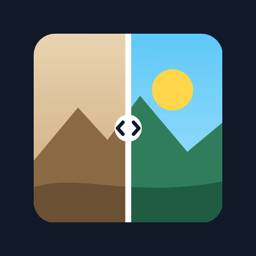

Then & Now - ReFrame
Destek
Eski bir fotoğrafı, aynı yerden bugün yeniden çekin. Then & Now - ReFrame eski fotoğrafınızı kameranın üzerinde yarı saydam gösterir; kadrajı çakıştırır, çekersiniz. Sonra iki fotoğrafı ince ayarla hizalayıp yan yana, alt alta, bölünmüş kare veya üst üste bir görsel olarak kaydedip paylaşırsınız.
Sık sorulanlar
Fotoğraflarım nerede saklanıyor?
Yalnızca cihazınızda. Hesap yok, sunucu yok; uygulama internetsiz çalışır. Ayrıntılar için gizlilik politikasına bakın.
Kamera izni vermek istemiyorum.
Sorun değil. Kamera ekranındaki galeri düğmesiyle bugünkü fotoğrafı galerinizden seçebilirsiniz.
İki fotoğraf tam oturmuyor.
Hizalama ekranında yeni fotoğrafı sürükleyin, iki parmakla büyütüp döndürün veya düğmeleri kullanın. "Otomatik hizala" bir başlangıç önerisidir; sonucu gözle kontrol edin.
Bir projeyi nasıl silerim?
Ana ekranda projenin altındaki "Sil" düğmesine dokunun. Uygulamayı kaldırmak da tüm projeleri siler.
İletişim
Soru, hata bildirimi veya öneri için: sunsetfly@gmail.com. Lütfen cihaz modelinizi ve sorunu kısaca yazın.
Support
Take an old photo again, today, from the same spot. Then & Now - ReFrame shows your old photo semi-transparently over the camera; line it up and shoot. Then fine-tune the alignment and save or share a side-by-side, stacked, split-frame or overlay image.
Frequently asked
Where are my photos stored?
Only on your device. No account, no server; the app works offline. See the privacy policy for details.
I don't want to allow the camera.
That's fine. Use the gallery button on the camera screen to choose today's photo from your library.
The two photos don't line up exactly.
On the alignment screen, drag the new photo, pinch with two fingers to scale and rotate, or use the buttons. "Auto align" is a starting suggestion; check the result by eye.
How do I delete a project?
Tap "Delete" under the project on the home screen. Uninstalling the app also deletes all projects.
Contact
Questions, bug reports or ideas: sunsetfly@gmail.com. Please include your device model and a short description.